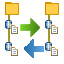
The Synchronize Stream Files Editor lets you compare, edit and synchronize the stream files of two IFS directories. Both directories are compared including all their sub directories. The comparison clearly highlights the differences. Here is a sample comparison:
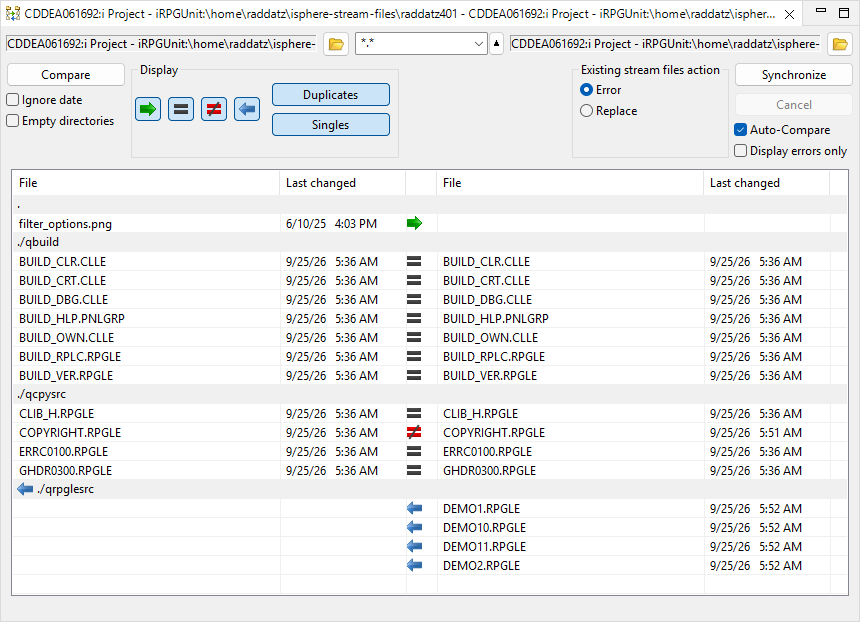
The Synchronize Stream Files Editor compares the date and time the content of the stream files has been last changed. This information is displayed by the DSPLNK command with option 8 next to the stream file in field "Data changed".
The content of the stream files is not compared byte by byte, but by a CRC32 checksum that is calculated on the host system.
Left and right items are matched by their path relative to the compared
directory. Given a left directory of /home/raddatz/isphere and a right
directory of /home/raddatz/isphere-dvp, the items
/home/raddatz/isphere/QRPGLESRC/DEMO12.RPGLE and
/home/raddatz/isphere-dvp/QRPGLESRC/DEMO12.RPGLE are compared with each
other, because they share the relative path ./QRPGLESRC/DEMO12.RPGLE.
| Directories are not compared. They form the structure of the compared directory trees. A directory that is present on both sides is always considered equal, because its last changed date changes with every change of its content. A directory that is missing on one side is copied when the stream files it contains are synchronized. |
Synchronizing on the Same System
The Synchronize Stream Files Editor uses the CPY command for copying stream files.
Synchronizing on Different Systems
The Synchronize Stream Files Editor streams the bytes of the source file to the target file. The CCSID of the source file is assigned to the target file before the data is written.
In both cases the last changed date and time of the source file is assigned to the target file. Hence the last changed date and time of the stream files are identical after the synchronization.
The Synchronize Stream Files Editor is started from a directory in the "IFS Files" subsystem of the Remote Systems view. Usually one would select two directories. But it is also possible to open the editor with one selected directory. In that case the second directory must be added after the editor has been opened.
Select one, preferably two, directories from the RSE tree and from the context menu (right click) select iSphere Synchronize Stream Files. If you select only one directory, then you need to open the second directory from the compare editor.
The "Ignore date" checkbox specifies whether or not the last changed date and time of the stream files is taken into account. If the "Ignore date" checkbox is selected, the last changed date and time is ignored and the stream files are compared by their checksum only.
The "Empty directories" checkbox specifies whether or not empty directories are compared and synchronized. A directory is empty, when it does not contain any file that matches the file filter, not even in one of its sub directories. Empty directories that are not part of the comparison are neither displayed nor synchronized.
Stream files can be selected by name and type. Enter the selection mask into the "Filter" field before starting the comparison:
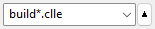
With that filter in place, you will get all "CLLE" stream files starting with "BUILD_":
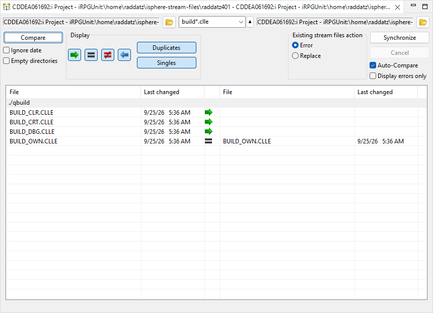
You can add multiple patterns separated by a space, comma or semicolon, for example:
*.rpgle, *.clle.
In case you want to exclude stream files by name and/or type, you can negate the selection mask by a preceding "|" (pipe symbol):
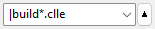
All patterns following the pipe symbol are considered negated, for example:
*.rpgle, |demo*.*.
It is also possible to use regular expressions for filtering items by name and type. Regular expressions must be start with a "<" character. The following example selects all stream files starting with "DEMO" followed by up to 6 unspecified characters. The file type must be "DSPF" or "PRTF":
<DEMO.{1,6}\.(PRT|DSP)F
| Entering a search string or a regular expression in upper or lower case does not matter, because the case is ignored. |
| The filter is matched against the name of a stream file, not against its path. Directories are not filtered. They are always searched for matching stream files, no matter how deep they are nested. |
Once there is a directory in both sides and after having set all necessary option, click [Compare] to start a comparison.
After the compare process finishes, note that icons between the two panes clearly display the differences.
A running comparison can be stopped with the [Cancel] button.
Use the filter buttons in the "Display" section to filter the stream files after the comparison:
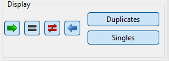
A checked button indicates that the relevant entries are displayed. Uncheck one or more buttons to remove entries from the display. For example, unchecking [=] will remove from the display all stream files that are identical in both directories.
The [Duplicates] and [Singles] buttons work on top of that. [Duplicates] displays or hides the items that exist on both sides, [Singles] displays or hides the items that are missing on one side.
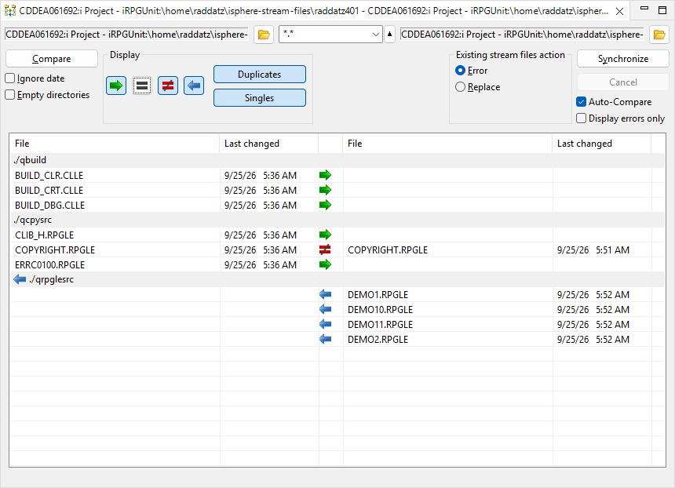
The status bar provides information on filtered entries. In the two directories compared above, "Items found: 8/15" means that 8 out of 15 items are displayed. Then information about the possible compare status follows. So there are 0 out of 7 identical items and a total of 4 different items displayed. Last but not least there are 3 unique items at the left and 1 unique item at the right without a counterpart on the other side.
Use the context (right click) menu on stream files to set the left or right arrows in the direction you want synchronization to occur.
The complete context menu looks like this:
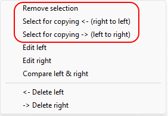
For example you may want to change the "not equal" action using "Select for copying <- (right to left)" or using "Select for copying -> (left to right)". You may want to use "Remove selection" on stream files which are missing from one of the directories to avoid copying them to the other directory.
Note that you can also conveniently delete, edit and compare stream files using the context menu. A directory can only be deleted, when it is empty.
Use the "Existing stream files action" options to specify what to do if a stream file exists. Option "Error" means, that the stream file is not copied and marked as "in error state". "Replace" means, that existing stream files are replaced silently.
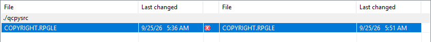
When you are satisfied that you have all the left and right arrows set correctly, click [Synchronize] to make the changes. You are asked for confirmation, telling you how many stream files are copied from left to right and from right to left. Note: There is no "Undo" after you have confirmed that dialog.
When a target directory does not exist, you are asked whether it shall be created. Answer [Yes] to create the missing directory, [No] to skip the stream files of that directory and [Cancel] to stop the synchronization.
A running synchronization can be stopped with the [Cancel] button.
| Note the "Auto-Compare" checkbox. If checked, the directories will be compared automatically after the stream files are synchronized. If not checked, changed table items which no longer match the filter options are not immediately removed from the table. The items are kept in the table to give you a chance to change them again, without changing the filter options. The status bar always show the correct values according to the filter options. You can toggle a filter option of your choice to update the table view. |
| Note the "Display errors only" checkbox. If checked, only the stream files that are in error state are displayed. That is helpful for identifying stream files that have not been synchronized due to errors. |
Status line:
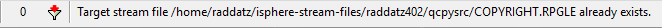
Properties view:
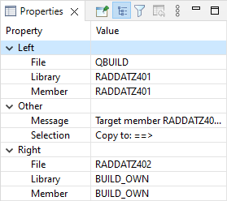
Use option "Display errors only" to filter the stream file list for items in error status.
There are three ways to find differences by opening the compare dialog:
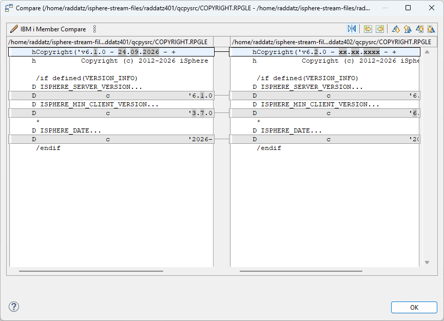